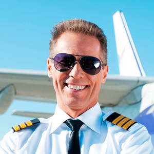
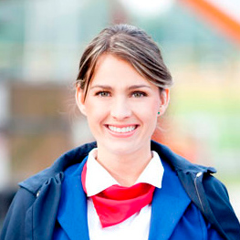
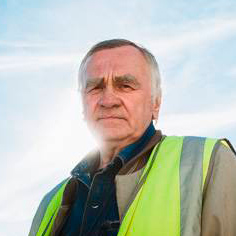
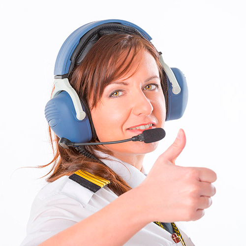
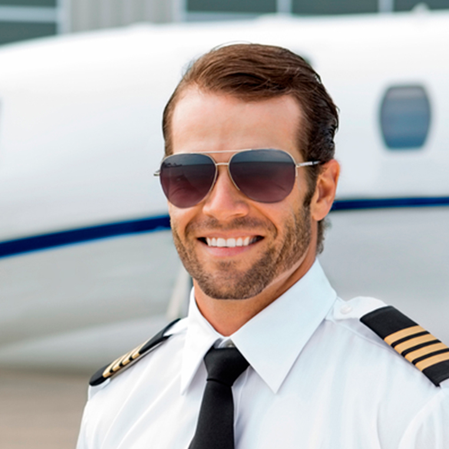

<!DOCTYPE html>
<html lang="en">

<head>
    <meta charset="UTF-8">
    <meta name="viewport" content="width=device-width, initial-scale=1.0">
    <meta http-equiv="X-UA-Compatible" content="ie=edge">
    <title>Экипаж</title>
    <link rel="stylesheet" href="../styles/main.css">
    <link rel="stylesheet" href="../styles/team.css">
    <link rel="shortcut icon" href="../favicon.ico" type="image/x-icon">
    <link rel="stylesheet" href="https://cdnjs.cloudflare.com/ajax/libs/font-awesome/4.7.0/css/font-awesome.min.css">
</head>

<body>

    <!-- Site header -->
    <header class="site-header">
        <div class="logo">
            
        </div>
        <div class="contact">
            <div class="contact__tel">8 (800) 00-392-10</div>
            <div class="contact__shedule">График работы</div>
        </div>
        <div class="shedule-tooltip">
            <div class="shedule-tooltip__work-hours">
                пн-вс: 09:00-20:00
            </div>
            <div class="shedule-tooltip__dinner">
                обед: 14:00-14:30
            </div>
        </div>
    </header>
    <!-- End of Site header -->

    <div class="wraper">
        <!-- Aside navigation -->
        <aside class="aside">
            <nav class="nav">
                <ul class="nav_ul">
                    <li><a href="./about.html">Главная</a></li>
                    <li><a href="#">Экипаж</a></li>
                    <li><a href="./comments.html">Отзывы</a></li>
                </ul>
            </nav>
        </aside>
        <!-- End of Aside navigation -->

        <section class="main-section">
            <!-- Breadcrumbs -->
            <div class="breadcrumbs">Главная / Экипаж</div>
            <!-- End of Breadcrumbs -->

            <!-- Main changing part -->
            <article class="article">
                <header class="article__header">
                    Экипаж
                </header>
                <div class="article__body">
                    <ul class="members-list">
                        <li>
                            <div class="member">
                                <div class="member__photo">
                                    
                                </div>
                                <div class="member__name">
                                    Белов Алексей Вадимович
                                </div>
                                <div class="member__position">
                                    Главный пилот
                                </div>
                                <div class="member__descr">
                                    Высокий профессионализм, честь и отвага – все это характеристики главного пилота Белова А.В. На его счету более 700 полетов.
                                    Награжден за мужество и отвагу указом президента.
                                </div>
                            </div>
                        </li>
                        <li>
                            <div class="member">
                                <div class="member__photo">
                                    
                                </div>
                                <div class="member__name">
                                    Сухарина Инна Николаевна
                                </div>
                                <div class="member__position">
                                    Бортпроводник
                                </div>
                                <div class="member__descr">
                                    Благодаря деятельности этого человека, на борту самолета клиенты чувствуют себя, как дома. Инна Николаевна чутко относится
                                    ко всем требованиям клиентов, очень любит детей и всячески помогает сделать полет комфортным
                                    и приятным.
                                </div>
                            </div>
                        </li>

                        <li>
                            <div class="member">
                                <div class="member__photo">
                                    
                                </div>
                                <div class="member__name">
                                    Лещ Борис Анатольевич
                                </div>
                                <div class="member__position">
                                    Авиатехник
                                </div>
                                <div class="member__descr">
                                    Человек с золотыми руками, инженер и конструктор от Бога! Борис Анатольевич работает уже более 50 лет и на своем веку видел,
                                    как из старых моделей самолетов появлялись настоящие авиа шедевры.
                                </div>
                            </div>
                        </li>

                        <li>
                            <div class="member">
                                <div class="member__photo">
                                    
                                </div>
                                <div class="member__name">
                                    Дигангидзе Элина Даниловна
                                </div>
                                <div class="member__position">
                                    Диспетчер
                                </div>
                                <div class="member__descr">
                                    Ей присущ внимательный подход к расчетам, а отменная память удивляет даже самых опытных членов экипажа. За 22 года работы
                                    она стажировала более 100 диспетчеров для работы в крупнейших аэропортах страны. Знает
                                    в совершенстве 5 иностранных языков.
                                </div>
                            </div>
                        </li>

                        <li>
                            <div class="member">
                                <div class="member__photo">
                                    
                                </div>
                                <div class="member__name">
                                    Следь Елена Николаевна
                                </div>
                                <div class="member__position">
                                    Старший бортпроводник
                                </div>
                                <div class="member__descr">
                                    Вежливая улыбка, внимательность к деталям и большой опыт работы – это лишь малая часть достоинств Елены Николаевны. Старший
                                    бортпроводник задает тон всей поездке, поэтому клиенты, которые летят с ней, заряжаются
                                    отличным настроением и гармонией.
                                </div>
                            </div>
                        </li>

                        <li>
                            <div class="member">
                                <div class="member__photo">
                                    
                                </div>
                                <div class="member__name">
                                    Нестеренко Юрий Афанасьевич
                                </div>
                                <div class="member__position">
                                    Второй пилот
                                </div>
                                <div class="member__descr">
                                    Правая рука главного пилота, опытный и отважный помощник. О своей работе в шутку говорит так «Наше дело правое, не мешать
                                    левому». Опыт работы составляет 18 лет, внимательно относится ко всем деталям и считает
                                    свою работу – делом жизни.
                                </div>
                            </div>
                        </li>

                    </ul>
                </div>
            </article>
            <!-- End of Main changing part -->
            
        </section>

    </div>

    <!-- Site footer -->
    <footer class="site-footer">
        <div class="made-by">
            Сделано с любовью и старанием на курсе «HTML + CSS» в 
            <span class="made-by_school made-by_bold made-by_underline">LoftSchool</span>. Автор работы: <span class="made-by__author made-by_bold">Муртазин Сергей
        </div>
        <div class="footer__logo footer__logo_center">
            
        </div>
        <div class="footer__socials">
            <div class="socials__header">
                Наши социальные сети
            </div>
            <div class="socials__icons">
               <ul>
                    <li><i class="fa fa-vk"></i></li>
                    <li><i class="fa fa-facebook"></i></li>
                    <li><i class="fa fa-google-plus"></i></li>
                    <li><i class="fa fa-twitter"></i></li>
                    <li><i class="fa fa-envelope"></i></li>
                </ul>
            </div>
        </div>
    </footer>
    <!-- End of Site footer -->
    
</body>

</html>